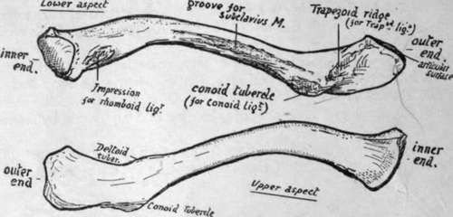
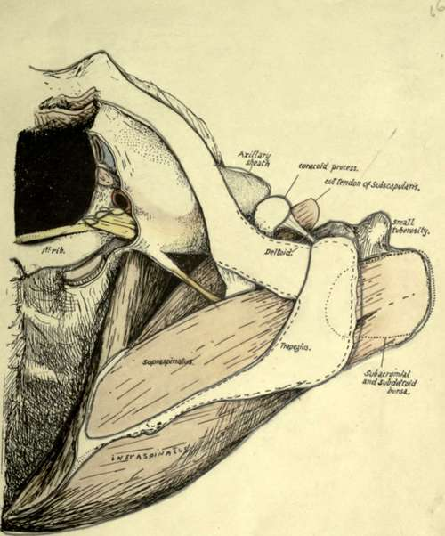

Upper Limb
Description
This section is from the book "The Anatomy Of The Human Skeleton", by J. Ernest Frazer. Also available from Amazon: The anatomy of the human skeleton.
Upper Limb
The buried pectoral girdle consists of two bones on each side-the Scapula or shoulder blade, on the back and outer side of the upper part of the thorax, supported here by muscles and by the clavicle or collar bone, which articulates at one end with the scapula and by the other with the top of the sternum : so the girdle is completed in front by the manubrium.
The humerus is the bone of the upper arm, articulating with the scapula and carrying at its lower end the radius and ulna, that constitute the bony skeleton of the forearm. The Radius is the preaxial bone, the Ulna postaxial. The radius carries the skeleton of the hand, and is capable of pronation and supination by rotating round the ulna.
The bones of the upper limb in men are frequently a very httle longer on the right than on the left side. In the adult the limb, hanging by the side, extends to about half-way down the thigh.
Clavicle
A long bone connecting the acromion process of the scapula with the upper end of the sternum and directed outwards and backwards: there is frequently a slight downward direction also to be found in female skeletons.
The bone has a double curve-whence its name *-in the horizontal plane. The inner curve takes about the inner two-thirds of the bone and has a posterior concavity that arches over the axillary sheath (see Fig. 51). The outer curve is shorter and sharper, with an anterior concavity, and takes the outer third of the bone. The inner two-thirds of the bone forms a somewhat rounded bar, but the outer third is flattened, so that it can be described as possessing upper and lower surfaces, with anterior and posterior margins : the " margins " are really thick, rounded surfaces. This part has also an outer margin which articulates with the acromion.
The lower aspect of the clavicle can be recognised at once (Fig. 50), by the prominent ligamentous markings on it and by the presence of a groove in its middle part.
The bone presents a shaft and two extremities for examination. The inner end has an articular surface at its extremity for the sterno-clavicular fibro-cartilage, concavo-convex, and prolonged on to the under aspect of the bone for articulation with the first costal cartilage. Round this articular surface are markings for the sterno-clavicular ligaments : the Sterno-hyoid origin extends from these ligaments behind on to the back of the bone for a little distance.
F.A- ' * Clavis = a key : the Roman key was S-shaped.
The shaft (Fig. 50) has on its lower aspect, just external to and behind the costal facet, a rough rhomboid impression for the rhomboid ligament : outside this, the groove for the Subclavius muscle, bounded by ridges that give attachment to thaxoslo-coracoid membrane : close to the back margin of its outer third a prominent conoid tubercle for the conoid ligament, and running outwards and forwards from this a ridge for the trapezoid ligament.
The upper surface of the shaft is comparatively smooth. On the inner third is the origin of Sterno-mastoid. An area for Pectoralis major occupies the front and lower aspect of the inner half of the bone. The Trapezius and Deltoid are attached to the back and front margins respectively of the outer third, and in the area of the last-named muscle a small deltoid tubercle may be apparent.
The outer end presents a narrow articular surface for the acromion, bevelled so that it looks downwards and outwards, with the result that the bone tends to ride above the acromion : it is normally on a higher level, and the direction of the articular surface accounts for the difficulty in retaining the clavicle in place after dislocation at this joint. There are feeble ligamentous markings round the articular surface.
Fig. 50.-Left clavicle from below and from above. To tell right from left, have the subclavian groove below, the flat end externally, and the rhomboid and conoid impressions towards the back.
The inner end of the bone is separated from the sternum by a disc of interarticular fibro-cartilage, which is thinnest in the centre and may be perforated here.
The disc has strong attachment, as shown in the diagram (Fig. 52), by its back and upper part to the clavicle and at its lower part to the sternum and first costal cartilage, so that it forms a band of connection between this part and the clavicle ; but it must not be forgotten that the meniscus is also fastened round its periphery to the capsule of the composite joint, thus completely dividing the joint cavity into two save when it is perforated. The strong attachment to the clavicle above is associated with this capsular connection, because the capsule here is thickened and strengthened by the interclavicular ligament : the marking for this hgament can be recognised on the bone above and behind the articular surface.
The mechanical result of such fixation of the meniscus is that the clavicle is held down to the sternum and is kept from riding over its top edge, while at the same time the bone can be elevated and depressed, rotating round an antero-posterior axis passing through the attachment of the fibro-cartilage. The elevation of the clavicle on this axis must be accompanied by a sliding out of its lower surface on the costal cartilage, whence the necessity for the lower articular surface. The elevation is checked by the rhomboid hgament, and the amount of play allowed by the ligament depends on its nearness to the axis of rotation combined with the direction of its fibres : they run upwards and somewhat inwards, and thus a certain amount of movement outwards on the elevating clavicle is allowed before they become tense.
Fig. 51.-A view of the skeleton of the region of the shoulder seen from above, in which the muscles, vessels, etc., have been put in position to show their relations to the bones. The humerus is somewhat inverted, and the Supraspinatus has thus come well under cover of the outer end of the clavicle : observe that the subacromial bursa might also reach this bone if it were a little larger. Insertion of Supraspinatus is beyond the acromion and therefore under Deltoid, and the bursa covering it becomes the subdeltoid bursa. Subscapularis and Serratus magnus are seen, with the axillary space between them: evidently this space is continuous with the posterior triangle of the neck behind the axillary sheath. Capsule of shoulder-joint is not shown : it would, of course, be deep to the tendons. Attachments of Trapezius and Deltoid indicated, from which the deep relations of these muscles near the bones can be appreciated.
Continue to:
- prev: Limbs: Upper Limb I. The Limb-Girdles And Skeleton Of The Free Limbs. Continued
- Table of Contents
- next: Upper Limb. Part 2